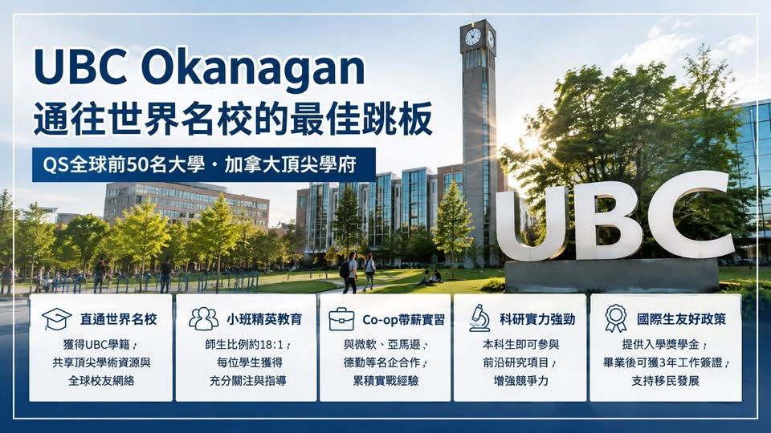

《看懂制度，選對世界》第一集
2027 加拿大名校申請：UBC Okanagan
：通往世界級大學的策略路徑 隨著2027年秋季入學申請逐步展開，在加拿大眾多頂尖大學中，英屬哥倫比亞大學奧肯那根校區（University of British Columbia, Okanagan Campus，簡…

【2027加拿大名校申請｜UBC Okanagan】：通往世界級大學的策略路徑 隨著2027年秋季入學申請逐步展開，在加拿大眾多頂尖大學中，英屬哥倫比亞大學奧肯那根校區（University of British Columbia, Okanagan Campus，簡稱UBCO），正成為國際學生值得深入了解的選擇。UBCO是分校，還是另一所大學？
英屬哥倫比亞大學設有兩個主要校區： UBC Vancouver Campus UBC Okanagan Campus UBCO並不是附屬學院、預科機構或民營銜接學校，而是英屬哥倫比亞大學的正式校區。學生在UBCO就讀UBC正式學位課程，畢業後取得的是University of British Columbia所頒發的學位，並可使用UBC的全球校友與學術資源。UBC在QS世界大學排名中長期位居全球前50名，也是加拿大最具國際聲望的研究型大學之一。
UBCO目前擁有超過12,000名學生，提供超過60個大學學士課程、研究所課程，以及大量跨領域研究計畫。對希望進入世界級研究型大學，又重視校園互動與學習支持的學生來說，UBCO提供了不同於大型主校區的學習環境。為什麼UBCO值得國際學生考慮？1 取得UBC學位，享有全球大學品牌 學生錄取UBCO後，即成為UBC正式學生。
這代表學生可以享有： UBC全球學術聲譽 UBC國際校友網絡 大型研究型大學資源 海外交換與跨校學習機會 國際企業及研究所認可度 對未來希望申請歐美研究所、進入國際企業或留在加拿大發展的學生而言，UBC的學位品牌具有相當高的辨識度。2 小型校園環境，增加教授互動機會 UBCO的校園規模比溫哥華校區小，官方公布的師生比例約為18：1。
較緊密的學習環境，有助於學生： 更容易與教授建立聯繫 參與課堂討論與研究專題 爭取教授推薦信 尋找研究助理或校內工作 獲得較多學術與職涯輔導 學生仍需主動參與課堂、教授辦公時間、社團及研究活動，才能充分運用校園資源。3 Co-op帶薪實習，累積加拿大工作經驗 UBCO提供Co-op帶薪實習、Work Study校內工作、社區服務學習及職涯體驗計畫。學生可透過相關制度，將大學課程與職場經驗結合。
Co-op可能帶來的優勢包括： 實習期間取得薪資 累積加拿大工作履歷 建立企業與職場人脈 提前確認職涯方向 增加畢業後求職競爭力 UBCO的學生可接觸科技、工程、政府、金融、管理、數據、環境及非營利組織等不同領域的實習機會。但必須注意，Co-op通常需要另外申請。學生仍需符合成績、學分、履歷、面試及課程進度等條件，進入UBCO並不代表學校會自動安排實習或保證錄取企業職位。
4 大學學士階段即可接觸研究計畫 UBCO是研究型大學校區，學生在大學期間便有機會參與： 實驗室研究 課程研究專題 畢業專題 永續與環境研究 電腦科學與數據分析 心理與健康科學研究 工程與科技創新計畫 對未來準備申請碩士、博士或研發產業的學生而言，大學階段的研究經驗相當重要。一份包含研究計畫、教授推薦信、專題成果與實習經驗的申請資料，通常會比單純只有成績更具競爭力。5 UBCO為符合資格的國際大學學士新生提供不同類型的獎學金及入學補助。
依目前公布制度，部分國際學生可能符合： UBC Okanagan Global Elevation Award International Welcome Award International Scholars Program 其他依學業成績與個人背景評選的獎項 部分獎學金可能自動審核，部分則需要額外提出申請。6 符合條件者可申請畢業後工作許可 在加拿大完成符合資格的學位課程後，國際學生可能申請畢業後工作許可： Post-Graduation Work Permit，簡稱PGWP。
依課程長度與當時加拿大移民政策，符合條件的畢業生可能取得最長三年的工作許可。這段期間可用於： 累積加拿大工作經驗 進入加拿大企業 發展專業職涯 評估後續移民申請方向 不過，PGWP並不是畢業後自動核發。學生仍須符合全職就讀、學校資格、課程長度、申請期限、語言能力及其他政策要求。因此，較準確的說法應是： 「符合加拿大政府規定者，可申請最長三年的畢業後工作許可。」 不宜將其宣傳為「畢業保證三年工作簽證」或「畢業即可移民」。UBCO大學學士申請條件 沒有統一的GPA保證錄取線 部分資料將UBCO的最低門檻寫成GPA
3.0或76%以上，但UBC並沒有為所有國家、科系及校區設定一條統一錄取標準。 UBC會根據學生的教育制度、申請科系與學術背景進行綜合評估，包括： 高中十一及十二年級成績 申請科系指定先修科目 英文與數學成績 Personal Profile個人資料 課外活動與領導經驗 所屬高中課程難度 部分科系要求的作品集或補充文件 工程、電腦科學、商學、科學及健康相關課程，通常會更加重視數學、化學、物理、生物或英文等指定科目。 台灣高中學生如何準備？ 台灣高中學生應依UBC針對台灣高中教育制度所公布的要求申請。 申請時通常需要準備： 高中成績單 在學證明或畢業證書 英語能力證明 Personal Profile 科系要求的補充資料 國際課程或檢定成績
LTU OSSD 台加高中雙聯學制、IB、A Level可以增加申請彈性 修讀AP、IB、A Level、OSSD或其他國際高中課程的學生，可以依所屬課程體系提出申請。AP成績可作為學術能力證明，部分高分AP科目也可能申請大學學分抵免。
英語能力要求 UBCO大學學士直接入學常見英語要求包括： IELTS Academic總分6.5，各單項不得低於6.0 TOEFL iBT達到UBC指定總分及單項要求 Duolingo English Test達到指定分數 完成UBC認可的英語授課教育背景 其他UBC接受的英語能力證明 未達直接入學英語要求的學生，可以研究UBCO的English Foundation Program或其他英語銜接方案。但語言銜接課程仍有最低申請條件，也不一定適用所有科系。可以從UBCO轉到溫哥華校區嗎？可以提出申請，但並非保證。
UBCO學生若希望轉往UBC Vancouver Campus，通常需要符合： 良好的大學成績 指定學分要求 目標科系先修課程 校區轉換申請程序 目標科系當年度名額及競爭標準 工程、商學、科學及其他熱門科系，可能有不同的轉入要求。部分科系每年可轉入的名額相當有限，因此學生不應將UBCO視為「入學後一定能轉到溫哥華校區」的保證跳板。UBCO碩士申請規劃 UBCO提供研究型與授課型碩士課程，涵蓋工程、教育、管理、科學、健康、心理、數據、永續及跨領域研究等方向。
學術成績要求 研究所的基本學術條件通常包括： 取得相當於加拿大四年制學士學位 大學後兩年成績達到B+範圍 約相當於UBC標準的76%至79%以上 符合個別研究所的先修課程要求 但這只是最低申請條件，不代表達到成績門檻即可錄取。熱門課程可能要求更高的學業表現、研究經驗、作品集、工作經驗或相關本科背景。-- GRE與GMAT要求 UBCO並沒有全校統一規定所有碩士課程都需要GRE或GMAT，也沒有統一規定全部免除。是否需要考試，取決於個別研究所。
多數UBCO研究所常見的最低英語要求為： IELTS Academic總分6.5 各單項不低於6.0 TOEFL iBT達到指定總分及單項標準 部分教育、社會科學、跨領域研究或專業課程，可能要求IELTS
7.0或更高。學生不能只看研究生院的一般最低標準，還要確認申請科系是否設定額外英語要求。
2027年秋季入學重要時程 準備2027年9月入學的學生，可參考以下規劃： 2026年8月至9月 確認申請科系、整理成績與活動經歷 2026年10月 UBC線上申請系統預計開放 2026年11月 準備高額國際生獎學金申請 2026年12月 完成部分獎學金及入學申請要求 2027年1月 一般大學學士申請截止 2027年1月至4月 補交成績、英語成績及其他文件 2027年春季 陸續收到錄取結果與獎學金通知 2027年5月至8月 辦理學簽、住宿、選課與入學準備 實際截止日期仍須以UBC當年度公布資訊為準。
Peter觀點：UBCO不是降低標準的名校捷徑 UBCO的優勢來自： UBC世界級大學品牌 較緊密的校園學習環境 大學階段研究機會 Co-op與職涯發展資源 國際學生獎學金 加拿大畢業後工作規劃 它適合希望取得UBC學位、重視教授互動、願意參與研究與實習，也能接受在Kelowna生活與發展的學生。當UBCO的專業資源與學生條件相符時，它不僅是UBC的另一個校區，也可能成為學生累積研究能力、加拿大工作經驗與國際職涯的重要起點。